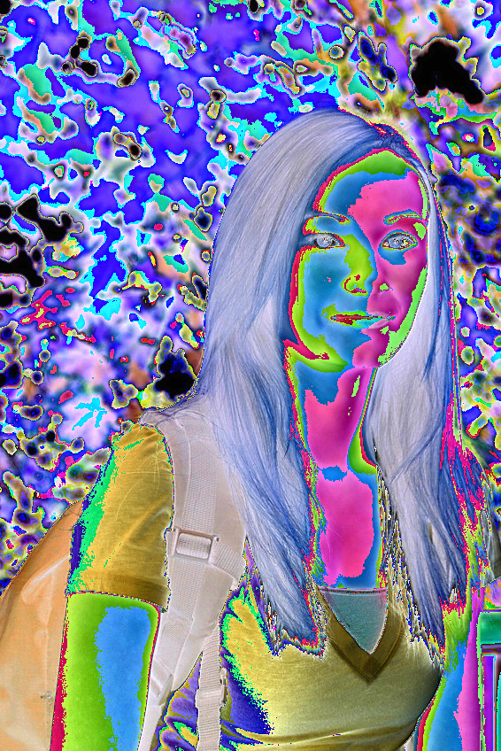

Image Artist
This is a simple image filter made in python. It inverts the colour of every pixel and then multiplies the RGB values by 3

def lucid_Filter(original_image):
#converts the image to a numpy ndarray
original_image = original_image.convert("RGB")
img = np.array(original_image)
#gets the width and height of the original image
height = len(img)
width = len(img[0])
for row in range(0, height):
for column in range(0, width):
r,g,b = img[row][column]
#for every pixel it adds a random value from 1 to 255. if the value is over 255 then it makes it 255
#r = r + random.randint(1,255)
#if r > 255:
# r = 255
#g = g + random.randint(1,255)
#if g > 255:
# g = 255
#b = b + random.randint(1,255)
#if b > 255:
# b = 255
#inverts the colour of every pixel and multiplies the RGB values by 3
r = 255 - r * 3
g = 255 - g * 3
b = 255 - b * 3
img[row][column] = [r,g,b] # red + green = yellow
#convert it back to an image from an array
result = PIL.Image.fromarray(np.uint8(img))
return result